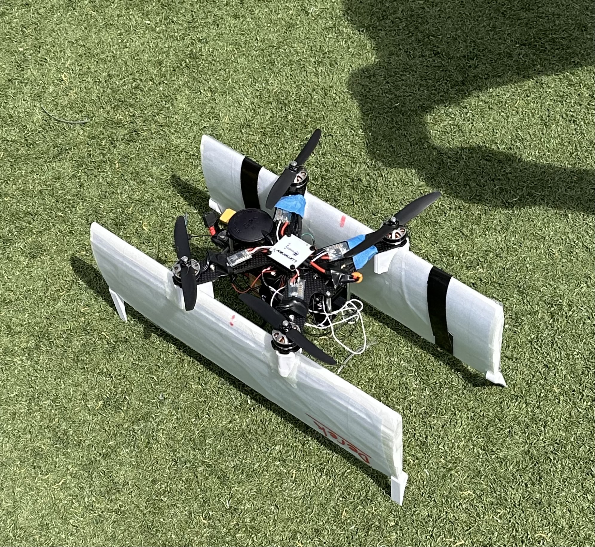
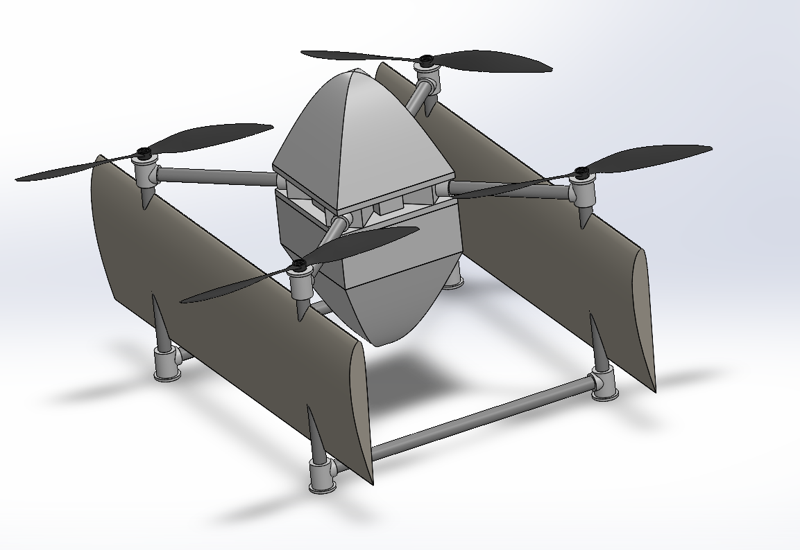
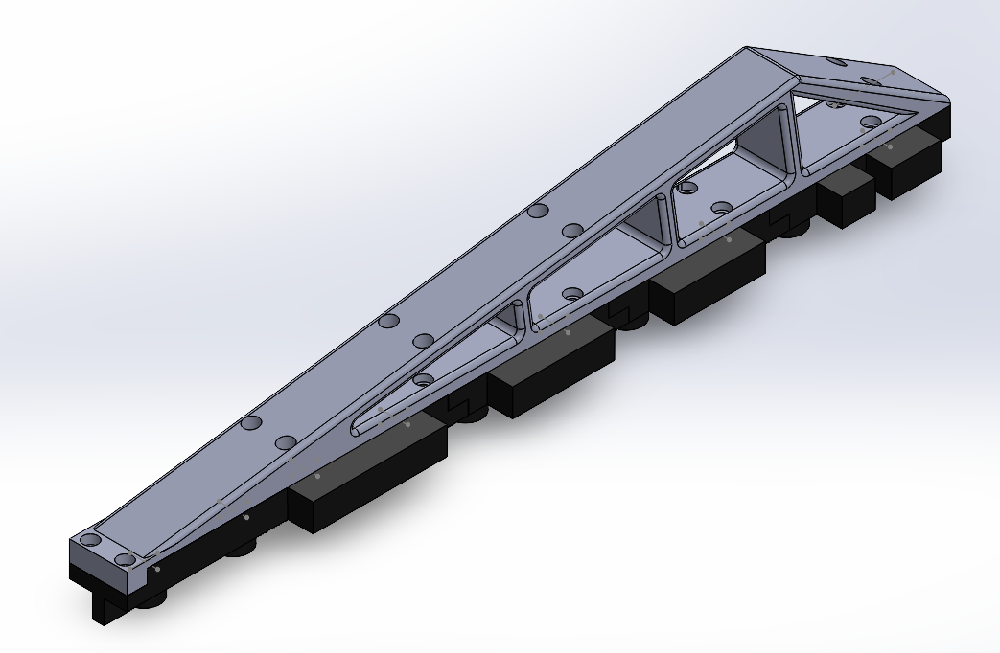
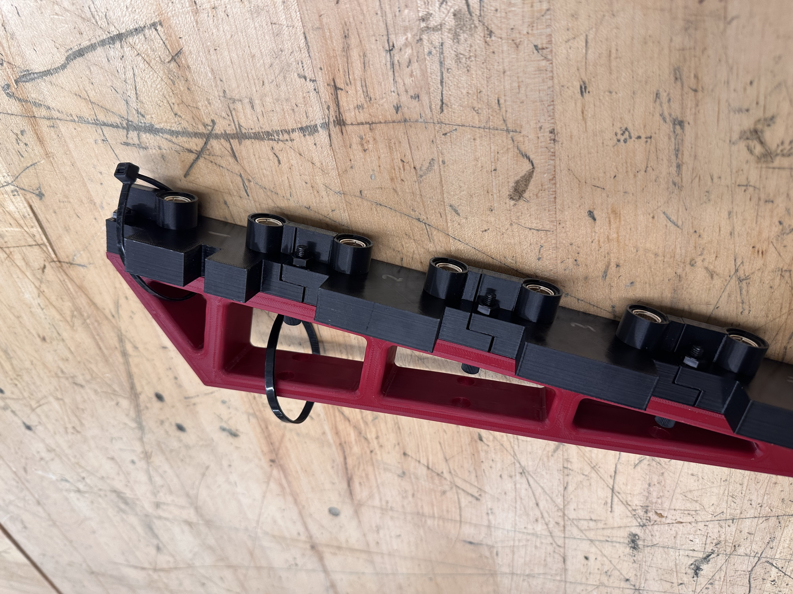
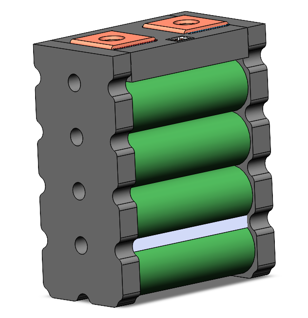
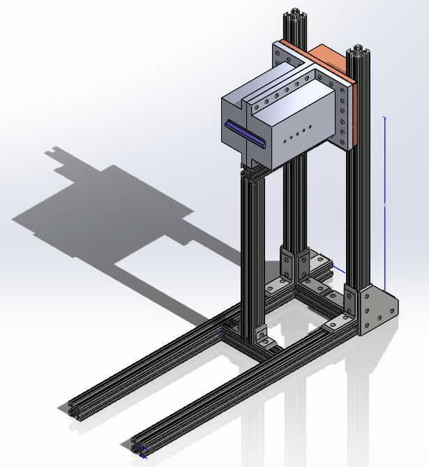
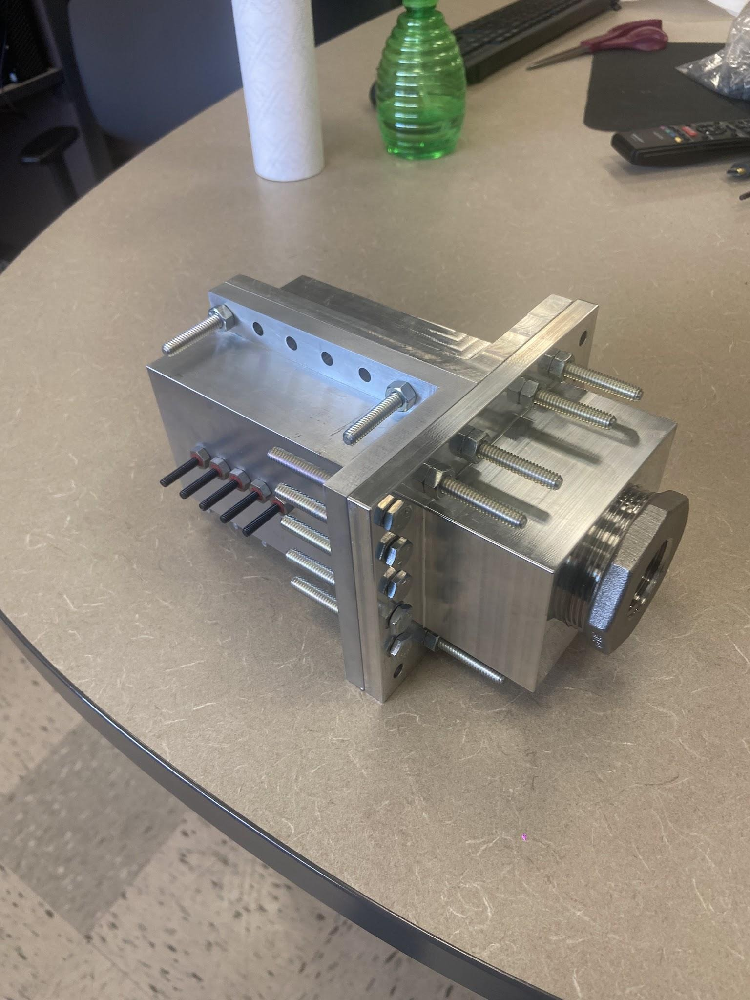
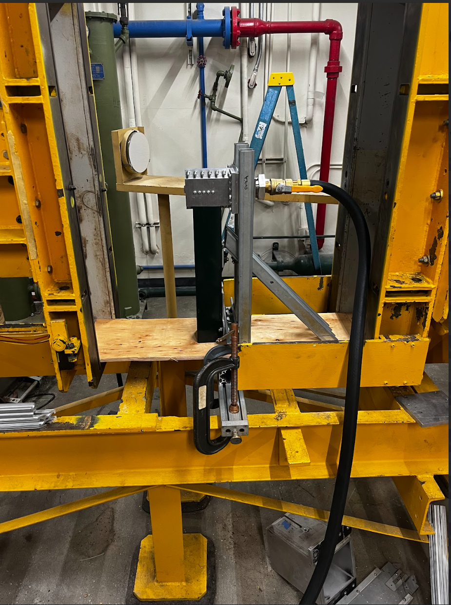

Projects
VTOL Quadcopter Biplane UAV Drone
Role: Manufacturing Lead
Timeline: January 2026 – Present
I lead CAD design, manufacturing planning, fabrication support, assembly, testing, and documentation for a VTOL UAV platform with moving flight surfaces and integrated propulsion systems.
My work includes creating SolidWorks models, assemblies, engineering drawings, BOMs, and build documentation to support prototype development and design reviews.
Improved structural integration accuracy and reduced assembly errors through standardized workflows, custom fixtures, tooling, and testing-driven design revisions.
Tools & Skills: SolidWorks, CAD, manufacturing planning, prototyping, assembly, testing


Aztec Electric Racing — Formula SAE EV
Role: Aerodynamics Team Member, Energy Storage Team Member
Timeline: October 2022 – Present
I supported the design, fabrication, assembly, testing, and troubleshooting of mechanical and structural components for a high-performance Formula SAE electric race car.
My work contributed to vehicle layout, mounting hardware, aerodynamic structures, energy storage packaging, subsystem integration, and design documentation.
I collaborated across electrical, structures, aerodynamics, and energy storage teams while supporting failure analysis and iterative redesign.
Tools & Skills: CAD, fabrication, FSAE, EV systems, subsystem integration, failure analysis


Battery Thermal Monitoring System
Role: Energy Storage Team Member
I supported the development of a temperature sensing solution for battery pack monitoring on the Aztec Electric Racing Formula SAE electric vehicle.
My work focused on sensor placement and mechanical integration near battery cells while maintaining compatibility with packaging, wiring, serviceability, and safety constraints.
The system improved thermal monitoring capability, contributing to safer battery operation and better data for performance analysis.
Tools & Skills: Battery systems, thermal monitoring, sensors, packaging, safety-focused design

Aerospike Nozzle Undergraduate Research
Timeline: September 2025 – Present
I conduct propulsion research focused on aerospike nozzle performance, supporting experimental design evaluation and data-driven analysis of nozzle configurations.
I use MATLAB, Python, Excel, and technical documentation tools to process data, evaluate performance trends, document findings, and communicate technical results.
This work supports experimental validation, design refinement, and clearer engineering decision-making for ongoing propulsion research.
Tools & Skills: MATLAB, Python, Excel, propulsion research, data analysis, technical reports



Resume
View or download my resume here.
Open ResumeContact
Email: devinaslezak@gmail.com
LinkedIn: linkedin.com/in/devin-slezak